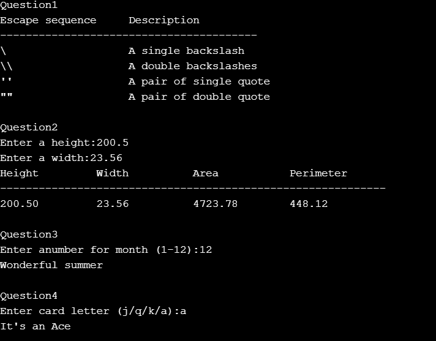
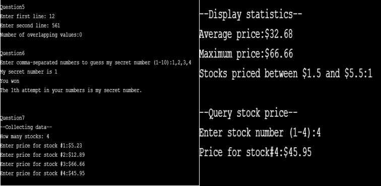

Object Oriented Programming
OOP
Object-Oriented Programming, short for object-oriented programming, is a kind of concept and methodology of how a program should be designed. Rather than simply dividing a program into data and processing methods, it is divided into basic units called numerous 'objects' and described as interactions of these objects. There are some features in OOP and here I will explain two features which I think as important in OOP. First feature is abstraction. Abstraction refers to the act of identifying common characteristics of objects and using them as objects of recognition by combining common attributes or functions. You need to rely on abstract concepts rather than specific concepts for each object to flexibly change the design. The common characteristics of dogs and cats are treated as a set of 'animal'. It should be designed as a "crying sound (abstract concept)" rather than a "dog or cat's own cry" (concrete concept). If it is designed with the unique cry of a dog or cat, it should add the unique cry of the animal every time a new animal is added. But if you design it with a cry, you don't have to change it. This is because each specific class can designate its own cry depending on the principle of polymorphism that will appear below.
Second is Polymorphism. Different classes of objects behave in their own ways when they receive the same message, and when they receive the message "an animal's cry," they can represent the cries of different animals. In other words, if there is no polymorphism, it should be designated one by one as the cry of dogs and cats. Polymorphism not only simplifies code but also allows flexible response to changes.